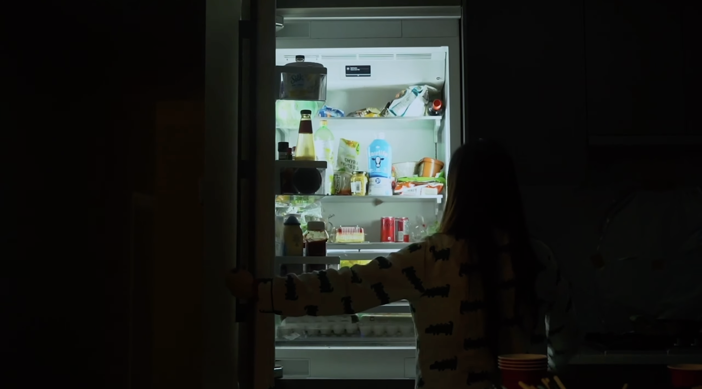

Disorder
A short film exploring body image, anxiety, and self worth. Team based production, 2023.
Project Overview
Disorder is a short film exploring the impact of social beauty standards on body image, anxiety, and self worth.
The film follows a protagonist navigating internal conflict through a combination of slow introspective scenes and fragmented, fast paced visual moments. The contrast between these rhythms reflects the tension between public appearance and private thought.
As Cinematographer, Project Coordinator, and Sound Designer, I supported the film from pre production through shooting and final integration. My work focused on translating the emotional direction into camera language, lighting, shot planning, production structure, and sound.
My Role
Cinematography
Helped define the visual language of the film. Planned camera angles, framing, lens choices, movement, and shot rhythm. Used static, handheld, and zoom techniques to support different emotional states. Coordinated lighting and camera setup during production.
Project Coordination
Helped organize the pre production, shooting, review, and post production stages. Supported role assignment and communication across shooting, editing, sound, and staging. Maintained visibility over the production sequence and key deliverables. Helped keep the team aligned with the agreed theme, tone, and stylistic direction.
Sound Design
Recorded and organized live sound, room tone, environmental sound, and character action. Supported both diegetic and non diegetic sound choices. Avoided overreliance on background music. Used sound to reinforce tension, pace, and emotional transitions.
Building the Film's Visual Language
The visual approach was designed around contrast. Slow, controlled scenes support introspection, while faster fragmented moments reflect anxiety and internal pressure.
- Slow paced observational scenes
- Short fragmented sequences
- Stream of consciousness transitions
- Controlled changes in pacing
- Cooler, muted tones during emotional tension
- Darker, more restrained visual moments
- Brighter, more natural color during clarity
- Low key lighting throughout
- Harsh direct light for discomfort
- Softer diffused light for vulnerable moments
- Contrast between emotional states
- Static framing
- Handheld movement
- Zoom
- Multiple shot sizes and angles

Setting the Shooting Scene
Planning the Film Shot by Shot
The shot list connected the story, emotional tone, camera language, location, performance, and production needs before filming began.
For each shot, the team considered scene purpose, shot size, camera angle, movement, lens choice, actor position, lighting, sound requirements, props, continuity, and estimated production needs. My cinematography and coordination responsibilities required the shot list to function both as a creative plan and as an on set production guide.

Shot List Preview
Structuring the Production
The project followed a mostly sequential production approach so that major creative decisions could be established before filming.
Pre Production
The team aligned on the theme, tone, story direction, visual style, roles, locations, shot list, and production requirements.
Production
The shooting team executed the planned scenes while adapting camera, lighting, blocking, and sound to the realities of the location.
Post Production
The editing team assembled the film, refined pacing, added sound, and developed the final color and emotional rhythm.
Review and Integration
The full team reviewed the cut, compared it with the intended direction, and identified final adjustments.
From Shot List to Set
During filming, the production plan needed to remain clear while still allowing for practical adjustments.
Camera position, blocking, lighting, available space, performance, and sound conditions sometimes required the team to adapt individual shots without losing the intended emotional effect.
- Preparing camera and lighting setups
- Confirming shot order and continuity
- Coordinating with performers and crew
- Checking framing and movement
- Recording usable live sound
- Tracking completed and remaining shots

On Set Shooting Process
Using Sound to Support Emotion
The sound approach was designed to keep the audience close to the character's environment and internal tension.
Rather than relying heavily on music, the film used live sound, environmental noise, room tone, character movement, and selected non diegetic elements.
Diegetic Sound
Environment sound, background ambience, and character movement recorded on set to keep the audience grounded in the space.
Emotional Contrast
Quiet, controlled sound during introspective scenes. Fragmented, layered sound during moments of anxiety and internal pressure.
Non Diegetic Elements
Selected music during high emotion moments and transitions between internal and external perspective.
Final Screening
The completed film was presented as the final result of the team's shared visual, production, editing, and sound decisions. The screening brought together the planned contrast in pacing, lighting, camera movement, and sound into one continuous experience.

Final Film Screening
What This Project Taught Me
01
Planning Creates Creative Freedom
A detailed shot list does not remove flexibility. It gives the team a shared foundation, making it easier to adapt on set without losing the emotional purpose of the scene.
02
Camera Language Shapes Emotion
Framing, movement, lens choice, lighting, and pacing all affect how the audience experiences a character's inner state. Cinematography is part of the storytelling, not only a recording process.
03
Coordination Protects the Vision
Film production depends on many connected roles. Clear sequencing, ownership, reviews, and communication help keep the original direction visible from pre production through the final edit.